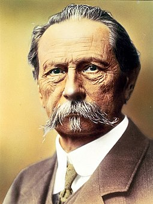

Mercedes-Benz
Mercedes-Benz traces its origins to Karl Benz's first internal combustion engine in a car, seen in the Benz Patent Motorwagen – financed by Bertha Benz's dowry and patented in January 1886 – and Gottlieb Daimler and their engineer Wilhelm Maybach's conversion of a stagecoach, with the addition of a petrol engine, introduced later that year. The Mercedes automobile was first marketed in 1901 by Daimler Motoren Gesellschaft (DMG). Emil Jellinek-Mercedes, an Austrian automobile entrepreneur who worked with DMG, registered the trademark in 1902, naming the 1901 Mercedes 35 hp after his daughter Mercedes Jellinek. Jellinek was a businessman and marketing strategist who promoted "horseless" Daimler automobiles among the highest circles of society. At the time, it was a meeting place for the haute volée of France and Europe, especially in winter. His customers included the Rothschild family and other wealthy clients, but as early as 1901, he was selling Mercedes cars in the "New World" as well, including to billionaires Rockefeller, Astor, Morgan, and Taylor. At the Nice race he attended in 1899, Jellinek drove under the pseudonym "Monsieur Mercédès". Many consider that race the birth of Mercedes-Benz as a brand. In 1901, the name "Mercedes" was re-registered by DMG worldwide as a protected trademark. The first Mercedes-Benz branded vehicles were produced in 1926, following the merger of Karl Benz and Gottlieb Daimler's companies into the Daimler-Benz company on 28 June of the same year. Mercedes-Benz - is a German luxury and commercial vehicle brand that was founded in 1926. Mercedes-Benz AG is based in Stuttgart, Baden-Württemberg, Germany. Mercedes-Benz AG manufactures luxury vehicles and light commercial vehicles, all branded under the Mercedes-Benz name.